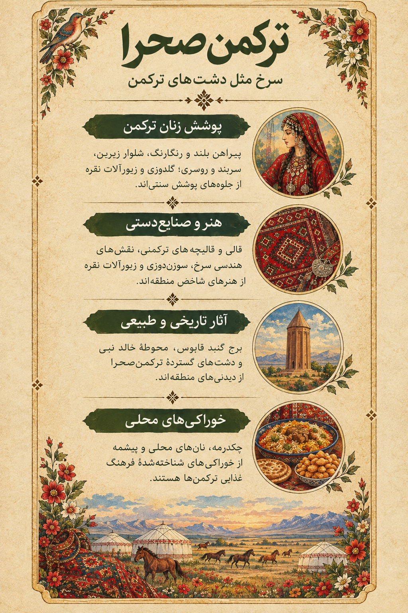

پیراهن بلند و رنگارنگ
پیراهنهای بلند و پارچههای رنگی در نمونههای مختلف پوشاک ترکمن دیده میشوند؛ جزئیات لباس در مناطق و دورههای مختلف یکسان نیست.
مجموعه تصویری ایران، هزار رنگ
روایت رنگ، نقش و زندگی در فرهنگ ترکمن
روایت تصویری پوشش زنان ایران

روایت تصویری پوشش زنان ترکمن در پیوند با دشت، نقشونگار و میراث فرهنگی
پوشش سنتی زنان ترکمن در بسیاری از نمونهها با پیراهنهای بلند، پارچههای رنگی، روسری یا سربند و زیورآلات همراه است. نوع لباس، رنگ و تزئینات میتواند با توجه به منطقه، سن، موقعیت اجتماعی و مناسبت تفاوت داشته باشد.

لیبل اطلاعاتی پوشش زنان ترکمنصحرا؛ همراه اثر در گالری حضوری
پیراهنهای بلند و پارچههای رنگی در نمونههای مختلف پوشاک ترکمن دیده میشوند؛ جزئیات لباس در مناطق و دورههای مختلف یکسان نیست.
پوشش سر، شیوه بستن آن و تزئینات وابسته به سنتهای محلی و شرایط زندگی است.
زیورآلات فلزی و نقرهای در برخی نمونههای پوشش سنتی ترکمن دیده میشوند و میتوانند ارزش زیباییشناختی و فرهنگی داشته باشند.
نقوش هندسی در قالی و بافتههای ترکمنی جایگاه ویژهای دارند و از شناختهشدهترین جلوههای هنر منطقهاند.
توجه: پوشش سنتی ترکمن در طول زمان و میان جوامع مختلف تنوع داشته است؛ این معرفی تصویری کلی از برخی ویژگیهای شناختهشده ارائه میکند.
یکی از شهرهای شاخص منطقه که برج تاریخی گنبد قابوس، نماد معماری و تاریخ آن است.
شهری ساحلی در کرانه دریای خزر که با بازار محلی، صنایعدستی و ارتباط با زندگی دریایی شناخته میشود.
از مناطق شناختهشده ترکمنصحرا که فرهنگ ترکمنی، بافتههای سنتی و چشماندازهای دشتی در آن دیده میشود.
منطقهای در نزدیکی ساحل خزر با معماری بومی، تالابها و شیوههای زندگی پیوندخورده با محیط ساحلی.
برجی آجری از سده پنجم هجری که به دلیل معماری شاخص خود در فهرست میراث جهانی یونسکو ثبت شده است.
مجموعهای تاریخی در ناحیه کوهستانی شرق گلستان که به چشمانداز طبیعی و سنگقبرهای خاص خود شناخته میشود.
قالیها و بافتههای ترکمنی با ترکیب رنگهای پرقدرت و نقشهای هندسی، بخشی مهم از میراث هنری منطقه هستند.
دشتهای گسترده و افق باز منطقه، بخشی از چشمانداز طبیعی و زندگی دامداری و کشاورزی آن هستند.
غذایی شناختهشده در فرهنگ ترکمن که معمولاً با برنج و گوشت تهیه میشود.
خمیر سرخشدهای که در شکلها و دستورهای گوناگون در سفرههای ترکمنی دیده میشود.
نوعی شیرینی یا خمیر سرخشده محلی که در برخی مناسبتها و دورهمیها تهیه میشود.
بافتههایی با نقشهای هندسی و ترکیبهای رنگی شاخص که از هنرهای شناختهشده جامعه ترکمناند.
تزئین پارچه و پوشاک با دوختها و نقشهای سنتی، در بخشهایی از هنرهای دستی منطقه جایگاه دارد.
دامداری و تولید فرآوردههای وابسته به آن در کنار کشاورزی، بخشی از اقتصاد سنتی برخی نواحی منطقه بوده است.
گندم و دیگر محصولات زراعی در دشتهای منطقه کشت میشوند؛ نوع و میزان تولید با شرایط هر ناحیه تغییر میکند.
برای مطالعه بیشتر درباره تاریخ، پوشاک، هنرهای دستی و میراث ترکمنصحرا، منابع زیر نقطه شروع مناسبی هستند:
این صفحه یک معرفی فرهنگی و هنری است؛ جزئیات پوشاک و سنتها ممکن است در میان خانوادهها، روستاها و دورههای تاریخی متفاوت باشد.